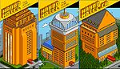

De: La Frikipedia, la enciclopedia extremadamente seria.
De: La Frikipedia, la enciclopedia extremadamente seria. De: La Frikipedia, la enciclopedia extremadamente seria.
«¡Avansa, bobba!»
~ un habbo , en un tipico laberinto
«¡Apreta F5 y ganaras 5000 creditos!»
~ timador para que le den permiso
«Eres un joputa, porque no eres HC, y yo si, HC rlz»
~ un HC sobre un habbo normal (el normal es mas avispado que un HC, recuerdalo)
«No quieres que te haga una mamada bobba, ;)»
~ Zorra del habbo
| De la serie Países del planeta tierra: | |||||
| Habbo Hotel | |||||
|---|---|---|---|---|---|
| |||||
| Lema: Stafe for Teens | |||||
| Himno: La Gran | |||||
| 
| |||||
| Capital | La Sala de Estarqui | ||||
| Mayor ciudad | Las Salas de Volvoretta | ||||
| Lenguas oficiales | Sudaquense, Friki Gallego (con sus correspondientes dialectos) | ||||
| Gobierno | Nazista Marxisista Lenista Comunista y Socialista | ||||
| Staff | Estar aqui, Volvoretta, Armitxe, Habbolosa]... (Asi un montón de pringaos) | ||||
| Área | Hotel Ubicado en Finlandia | ||||
| Población | Mas de 500.000.000 En el Mundo | ||||
| Moneda | Habbo Creditos | ||||
| Zona horaria | -6 en Sudamerica | ||||
| Dominio Internet | .es | ||||
| Código telefónico | Depende del Pais de Donde Entres
| ||||
| ¡Pulular sin Molestar! | |||||
Habbo Hotel, también llamado República pixelada aunque en realidad es una Dictadura Monopixelada de mierda pixelada monocotiledónea federal creada por Estarqui (algunos herejes lo atribuyen a Platón).
Coges por la Avenida Google y das a la izquierda, un poco más allá de la tienda Gay's Yahoo's and Méssenller's
Todo tipo de timos con tal de conseguir "Creditos/furnis", cada cual mas ridículo y absurdo que el anterior. Donde los n00bS se manifiestan mediante timos, insultos y cibersexo, entonces viene un MOD corrupto y banea a todos que luego van por ahí haciéndose pasar por los mods.
La principal fuente de ingresos es la producción, consumo y exportación de muebles pixelados y timos que se producen a diario. También se han visto casos de chicas que se prostituyen en el hotel a cambio de furnis o créditos, los clientes suelen acabar decepcionados ya que la mayoría son obesas o tienen alguna deficiencia física o mental.
Paro por mantemiento en habbo es cuando los mods y staff petan salas, se roban megarares y hacen orgias (Por eso expulsan a todo los habbos,exceptos sus chupamedias, los cuales tambien estaran en la orgias)
Allá por el año 2003 después de Cristo (Anda, que casualidad, el mismo año en que apareció el euro!), el Ejército de la República monopixelada se estableció en España, extendiéndose más tarde a Latinoamérica. El primer gobernador de España designado por el Ejército de la República Monopixelada de Habbo se llamaba Arturo. Según fuentes fiables, el susodicho Arturo pagaba la factura hídrica de todo el país dominado por Habbo. A finales de 2004, poco después de llevar un año establecido allí, Arturo fué derrocado en un sangriento golpe de estado por el Ejército Estarquiano Revolucionario de Habbo(formado por gente como Estarqui) capturando y ejecutando a Arturo y a toda su camarilla. Estarqui se convirtió en manager de Habbo España e inició una sangrienta dictadura estalinista en el Hotel. Aún hoy se mantiene en el poder, habiendo designado a dos managers más e instaurando un, si cabe más cruel, gobierno dictatorial. La Resistencia Arturista pervivió los primeros meses tras el derrocamiento y ejecución de Arturo, pero en enero de 2005 cualquier forma de resistencia (apoyadora de Arturo) estaba totalmente aniquilada. Actualmente, la Polvoretta, tras mucho "pulular" por el hotel, acabó cansándose, cediéndole el poder a .adgar. que parece que está buscando el método de dominar el habbohotel hispano para echar a Estarqui de una vez por todas.
Los Staffs y MODs oprimen a la sociedad abusando de su poder para perjudicar a habbos n00bs y no tan n00bs. Algunos fueron baneados injustamente lo que causó la Revolución Pixelada del '82. Murieron muchos Habbos (habitantes), lamentablemente, crearon uno nuevo y siguen jodiendo en dicho lugar; antaño, algo ameno.
Partys Script: Traducido como sacar bebidas raras o poner posters/alfombras en lo negro, esto esta totalmente ilegal en habbo. Los mods suelen cerrar las salas, pero antes llega el típico friki que empieza a mandar alertas y al final lo banean a él. Cuando llegan los mods a las partys algunos cierran la sala, pero otros tienen la valentía de entrar y bailar (como Gostito), así se ganan el respeto de los habbos.
El Scriptaso o Gran ataque de scripts ocurrió en el 2005 o el 2006. Un montón de scripters se pusieron a poner furnis raros (muebles) en las salas de los demás, pilares de colores raros, camas nunca vistas. La gente cerraba sus salas despavoridas por el temor de perderlo todos sus píxeles que les costaron millonadas y los MODs iban de lugar en lugar pidiendo calma. Muchos perdieron todo, muchos fueron banneados. Un día el ataque cesó
Ademas, se crearon los "Hobbas" y los "Linces" gente muy, pero que muy extraña que dice ayudarte y cuando les envías una alerta te banean por molestarle, es lo que se llama: "Habbo Bulling" y... donde esta la policía? Son los habbo staffs, con eso ya te lo digo todo.
Sudaquense, Friki Español (con sus correspondientes dialectos).
La sala de Estarqui, acualmente en ruinas por la sangrienta contienda que hubo en la revolución del 82'. (Volvoretta estuvo ahí) Ahora la capital del estado está en la primera sala pública:
Habbo-Creditos (furnis): 6 equivalen a 1.39€, lo que te vale el SMS para conseguirlos (una puñalá en toda la espalda).
La monopolización de la economía ha conllevado a otros métodos de conseguirlos, (algunas personas hablan de que los MODs blanquearon créditos para conseguir el famoso cojón de mico sagrado).
Tienes que enviar sms para conseguir créditos (dinero) y te pinchan el teléfono así que mejor no lo hagais. es mejor y mas barato timar
Sudamericanos, españoles, vascos, vzlanos que todo el puto día dicen ¡vzlaaa!, catalanes e ingleses que se cuelan.
El filtro bobba (eres tú), más conocido como SATANASXP, usa un adelanto tecnológico de moderación sutil que impide que se digan el 50% de los tacos existentes (prueben a escribir joder y verán) y que impide que los habbos puedan darse el msn, pero no el messenger. Lo más raro de todo es por qué se llama filtro bobba. En los últimos meses el bobba se ha vuelto insoportable, se dices "Tienes cama", que sería la típica frase para vender una cama, sale bobba. Por suerte ahora hay un método para suprimirlo, simplemente hay que ir a las preferencias del keko y desactivar una casillita. Eso si, si te traba algún mod corrupto diciendo algún taco de bobba, corre como keko que tima a Estarqui (no es muy difícil pero...)
El Habbo Club es el club de los VIP's en habbo, donde solo entran los que no saben como malgastar la pasta y apuestan por esta, una de las peores. Presumen mucho de ropita y de pantalones, pero son de una tienda pixeleada de segunda mano que organiza Volvoretta, la staff tía buena del hotel. A los HC, por cada mes se les entrega objetos que solo se los dan a ellos, por su cara bonita. Entre ellos encontramos: Una tele en la que puedes meterte (total, para ver otra cosa te ves a ti), una lámpara que solo se ilumina a ella misma o una alfombra árabe (será por el tema de la inmigración). Los HC tienen una plaquita, pero no fardan de ella de lo fea que es, porque según ellos es de n00bs(algunos), ellos si que son n00bs pagando por una placa que luego no se ponen. Estos pijos se llaman reshulones, que van mas negros que el puto carbon, Ponen tildes en todas las vocales posibles y siempre tienen un habbonovio (seres marginados sin vida social) con el cual se morrean cada 2 minutos. Ejemplo de frase reshulona:
Habbo limita con los siguientes lugares:
Nunca funcionan y no puedes poner imágenes porno, pero la gente se las curra con el teclado, todos hacen doble posteo.
En esos foros suelen haber la gente que postea por todas partes como thedarkchaos y xeltraviesox y gente que es admin de ese grupo que después les borra los mensajes a todos y dejan las peleas en importante con la escusa de que es un foro de discusión y hay que discutir ??????????.
Esto del Habbo ha causado bastantes problemas económicos y gástricos, al parecer en el año que estamos (si mal no recuerdo, 2008), algunos Gilihabbos se dedicaban a robar muebles (o furnis) para gobernar el universo (por algo se empieza ¿no?), al parecer la policía pixelada se percató del asuntillo que se llevaban a cabo, y fueron a las casas de los chabales que practicaban el tráfico de furnis pixelados de Bobópolis, y los arrestaron (quedaron como auténticos gilis, frikis, aburridos, pitrafillas y malvados), así que todo el mundo les señalaba por la calle.
En un futuro no muy lejano, los personajillos pixelados de Habbo saldrán de los ordenadores y nos masacrarán en una batalla encarnizada y sangrienta (pero los Gilihabbos dicen que podremos cobatirlos con zumo de arándanos y virus informáticos... Aunque yo personalmente lo veo difícil viendo la forma en que evoluciona el planeta).
También estubo la época de terror de MOD-CHAUPI (Chananan!!!) fue una pequeña dictadura que duro apenas 1 semana, la historia comenzó con su proclamación (Un día entre tantos dónde todos los habbos se aburrían) Parecía un mod normal, como todos unos cabrones y fachas, pero según cuenta su leyenda, la chica era algo estúpida y le gustaba dar su contraseña a todo dios, (y ya con su nombre...) y con esto muchos habbos se conectaban con su usuario, y se dedicaban a robar a otros personajes, cuando fue pillada, estarqui la condenó a el baneo permanente de seguridad. Y ahora algunas personas saben la contraseña de este mod baneado (como el que ha escrito esto) y además, ahora muchos grupo de malotes "juanckers" se dedican ha hacer pantallazos en sus retros de MOD-chaupi, como si ellos la hubieran "juanckeado".
La V18 es la versión que han puesto nueva en Habbo Hotel. Con ella puedes ponerte gafas, penes de látex en la frente, collares, pulseras, testículos in-alambricos, barba, piojos, colores raros, cinturones, bello pubico de colores, colores de piel inexistentes, traje de masoca y demás pollerias.
Además se han currado una preciosa web, que quita el estilo antiguo con apartado de ayuda y todo, para poner solo un bocadillo para poner tu nombre y tu contraseña.
Su lamentable FLASH (El programa con el que se hace (o hizo hace millones de años) el juego ese) impide poder cambiarte de ropa con Internet Inplorer, así que tendrás que usar Morzcilla Firefox (con el que el lagg es tremendo).
La nueva versión incluye un 50% más de timos, de virus y un 75% mas de enchufe.
Estarquista: Es una dictadura que inicio en 2003 tras el derrocamiento y asesinato de Arturo, este gobierno se mantiene ya que existe muy poca oposición, ya que el puto estarqui adviritió que si algun puto habbo se atrevia a Revelarse sería baneado y timado por el puto resto de su miserable vida (tan solo con esto todos los putos habbos adaptaron la vida de 'Estarquista').
Armitxetista: El 0.6% de habbos apoya este partido, ya que armitxe prometió habbo creditos gratis y toda esa paja.
Liberalista Habbos: El 41% de habbos lo apoya ya que estan cansados de la mierda de dictadura causada por el gobierno estarquista, muchos habbos han perdido sus píxeles gracias a este movimiento, muchos perdieron sus furnis pero lo unico que hicieron fué volver a crearse otro habbo y el puto estarqui ni paja le paró.
Go-BoYcialista:Es otro puto partido de gobierno de esos frikis de mierda comandado,dirijido y OBLIGADO por nuestro comandante mesmo el dictador de la Revolución Habbolano prentende establecer un regimen nazista,mierdista,frikista,maldecista,putista,socialista y pajista (Cómo Fidel Castro y su revolucion Cubana) Nuestro querido y amadisimo dictador ESTAR AQUI
Este partido prentende establecer un regimen nazista, mariconista, mierdista, enchufadista, hispanista, frikista, maldecista, putista, socialista y pajista.
Así que es obligatorio seguirlo.
Al parecer, según fuentes de jabu y estib yobs, Estarqui (cruel dictador y jefe de la Ferrea República) pretende abondonar jabu, según los n00bs de todo jabu el pretende abandonarlo ya que la dictadura se esta viendo en su época mas pelua!! puesto que la estan amenazando Lost_Witness (Perdido_Enlapolla) este estaf es de jabu punto u ca y pretende con sus actualizaciones baratas sacadas de www.habboactualizaciónbaratademierda.com dominar todo jabu y ser como hitler (solo que pretende la erradicación de n00bs) y asi poder ser el jefe supremo de todo jabu!, o simplemente descubrió que tiene sida y quiere pasar sus ultimos dias por toda europahabbo.
Estar aqui a principios de 2004 ve que jabu ya nadie lo usa (en realidad no le sorprende por cuan aburrido es) entonces luego de ingeniar tecnicas con Bil Guei y Esteban Jobs se le va la pinza y dice meter a el mercado los furnis rares (aunque solo los muy pero muy pero muy n00bs los compran) luego que los introduce decide que tengan mas de 10 créditos en ganancia ¿Cómo? pues fácil como los n00bs ven los furnis con gran aprecio estar aqui decidió sacar furnis cada vez que le diera la vena su puto y primer damo Go-BoY luego los n00bs como .-Camilop-., o.O-ruben-O.o y demás (amigo del friki que escribe esto) matarán por comprar estos putisimos furnis!!
Al parecer a Estarqui no le gusta que los ecpserts guien a los jabus nuevos entonces junto con Lost_Witness (Perdido_Enlapolla) Vil Güei y Estib Yobs se idearon la desaparición de los ecsperts así que a partir de la actualización XXIV (24 Para los analfábetos) tooitoss los ecsperts quedarán fuera de jabu x siempre!!! entonces al parecer la actualización XXIV además de no tener a los ecsperts también será gratis el esnou estor y el batle bal para orvidar la ida de los ecsperts!!!
Los habbos retros son una gran Ochorrocientosmil creditos, el brillo de esto es que comenzaras con Ochorrocientosmil creditos.
Luego, te caban robando todo lo que tienes, pero, que es mejor, que te robe un marginado social o tu mejor amigo virtual que seguro que es majisimo contigo (Tanto que te roba hasta los calzones)
(son obiamente ilegales.
| |
|---|
| 4chan • Anarcopedia • Argim.net • Asco de vida • Cleverbot • Cuánto Cabrón • Desmotiva2 • Desmotivaciones • EBay • EBuddy • Encyclopædia Dramatica • Facebook • Forocoches • Gamil • Gatitas Pop • Google Groups • GTAChile • Hispachan • Hotel626 • Identi • IMDb • Inciclopedia • Instagram • La Súper Cafetera • Last.FM • Locüendo • Man red • Maristation • Media-Vida • Megaupload • Menéame • Metroflog • MySpace • Poringa! • Que pasa • Red social • RedTube • Rule 34 • Taringa! • Traductor Google • Tuenti • Tumblr • Twitter • U.N Cuyo • Uncyclopedia • Vagos.es • Vota mi cuerpo • What Da Faq • Wikia • Wikileaks • Wikipedia • Wikipediars • Windows Update • Xvideos • Yahoo • Yahoo! Respuestas • YouTube • |
Autor(es):